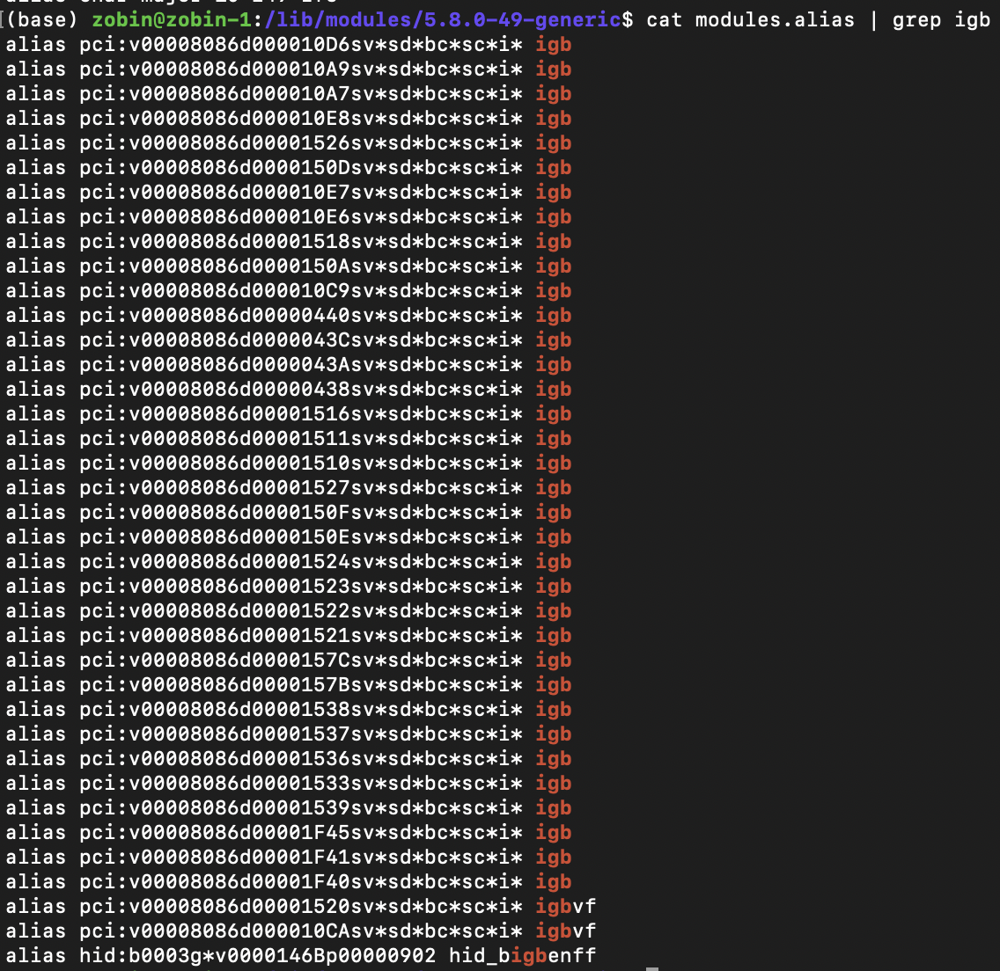

⚠ 转载请注明出处：作者：ZobinHuang，更新日期：April.14 2021

本作品由 ZobinHuang 采用 知识共享署名-非商业性使用-禁止演绎 4.0 国际许可协议 进行许可，在进行使用或分享前请查看权限要求。若发现侵权行为，会采取法律手段维护作者正当合法权益，谢谢配合。
1. 写在前面
(1) 这篇文章将分析 PCIe 网卡驱动是如何工作的，并分析一个数据包从在网卡上被接收到抵达 socket 接收缓冲的过程。
(2) 基于手头的参考资料，我们选择的分析目标是针对 Intel I350 Ethernet controller[1] 的网卡驱动，其驱动文件在如下源码树路径：
/drivers/net/ethernet/intel/igb/
(3) 可以前往我个人维护的 linux 内核仓库[2]查看带有中文注释的代码。
2. PCI 总线基础 与 内核相应 PCI 数据结构和操作函数
(1) PCI 总线原理
(a) PCI 与 PCIe 总线
如上左图所示，PCI 是一种总线型的设计。系统中的北桥上方连接了 CPU 和 内存，管理的是 存储域 的地址空间，北桥下方连接的是PCI总线，管理的是 PCI域 的空间。也就是说，“CPU和内存”，“PCI总线上的设备” 这两者是独立寻址的。PCI 设备的定位方法是通过 "总线(bus) + 设备(device) + 功能(function)" 组成的，即在某条 PCI 总线上的某个 PCI 设备上的某个功能，根据这三者来定位 PCI 设备的方法被称为 “PCI 寻址”。一颗 PCI 设备树一共支持 256 条总线，一条总线上支持 32 个设备，一个设备上又支持 8 个功能。
总线发展到 PCIe 则变为一种端到端型的设计，如上右图所示，PCIe 设备通过 PCIe Switch 进行路由，不再是总线型的通信。另外与 PCI 有差别的就是，隔离 存储域 和 PCI域 的设备在 PCIe 标准中被定义为 Root Complex。而 “PCIe 寻址” 方法与 “PCI 寻址” 无太大差别，也是通过 "总线(bus) + 设备(device) + 功能(function)" 对设备进行定位。
(b) PCI 设备内存
1. PCI 设备内存类型 和 访问方式
PCI 设备上的存储器分为两种：寄存器 和 内存，前者一般用于存储设备的配置参数，其中有些寄存器是 read-only 的，由厂商在出厂时写死的；后者一般用于存储设备处理的一些数据，比如 网卡上的网络数据包，SSD 中存储的数据 Cache 等。
Host 访问 PCI 设备上存储器的编址方式有两种：内存空间 (Memory Space) 和 IO空间 (IO Space)。前者即主机内存地址的寻址空间，即 PCI 设备会占据部分主机内存的地址空间；后者是 x86 特有的一个空间，是与内存空间相独立的一个空间。当外部设备的存储器映射到 IO 空间时，主机只能使用 IO 端口操作函数 对数据进行读写，如 inb(), inbw(), inl(); outb(), outw(), outl() 等，这被称为 IO 端口 (IO Port)；当外部设备的存储器映射到的是内存空间时，主机则可以使用访问内存的方式对外部设备存储器进行操作，这种方式被称为 IO 内存 (IO Memory)[4]。
2. PCI Configuration Space
PCI 标准规定了每个 PCI 设备功能都必须具备配置寄存器，即 256-Byte 的 Configuration Space Registers 的组织格式，如下表所示，具体各个寄存器的用途也在表中有所阐述。值得注意的是，我们分析的是 Header Type 为 0x00 的 PCI Configuration Space Register，即 PCI 设备卡的配置寄存器。此外还有诸如 Header Type 为 0x01 的 PCI 桥等的配置寄存器，此处不做介绍。
| register | offset | bits 31-24 | bits 23-16 | bits 15-8 | bits 7-0 |
|---|---|---|---|---|---|
| 00 | 00 | Device ID 用于标识硬件制造厂商，制造商必须向 PCI Special Interest Group 申请一个全球唯一的编号才能够出厂设备[3] |
Vendor ID 用于表示厂商下的某个设备，由厂商自己决定，无需对外申请。Device ID 和 Vendor ID组成了唯一的 32 位的设备标识符，通常被称为 签名(Signature)[3] |
||
| 01 | 04 | Status | Command | ||
| 02 | 08 | Class Code 用于标识该外部设备属于哪个类。某些驱动程序可以支持多个相似的设备，这些设备的 签名 都不一样，驱动程序则能根据 Class Code 字段识别[3]。 |
Subclass | Prog IF | Revision ID |
| 03 | 0C | BIST | Header Type | Latency Timer | Cache Line Size |
| 04 | 10 | Base Address #0 (BAR0) | |||
| 05 | 14 | Base Address #1 (BAR1) | |||
| 06 | 18 | Base Address #2 (BAR2) | |||
| 07 | 1C | Base Address #3 (BAR3) | |||
| 08 | 20 | Base Address #4 (BAR4) | |||
| 09 | 24 | Base Address #5 (BAR5) | |||
| 每一张 PCI 卡上的每一个功能都会有这六个 BAR 寄存器，BAR 寄存器的作用可以被理解为：[5] (1) PCI 制造商会在 BAR 寄存器中以某种方式 (下面会解释) 向操作系统说明它想要操作系统为它分配多少内存，以及这些内存要映射的是 内存空间 还是 IO空间。 (2) 操作系统在初始化 PCI 设备的时候会读取这几个 BAR 寄存器，并根据要求为这些设备分配相应内存空间，并且会将分配的内存空间初始地址写回到 BAR 寄存器中。 |
|||||
| 0A | 28 | Cardbus CIS Pointer | |||
| 0B | 2C | Subsystem ID | Subsystem Vendor ID | ||
| Subsystem ID, Subsystem Vendor ID 这两个字段用来进一步识别设备。某些外设可能是一个通用的接口芯片，接上不同的子设备可能会是完全不同的用途，这个字段就用于继续标明子设备，以让驱动程序识别它所关心的实际设备。[3] | |||||
| 0C | 30 | Expansion ROM base address | |||
| 0D | 34 | Reserved | Capabilities Pointer | ||
| 0E | 38 | Reserved | |||
| 0F | 3C | Max latency | Min Grant | Interrupt PIN | Interrupt Line |
在这些寄存器中，有标注红字的寄存器都是值得我们去关注的。其中 ，BAR 寄存器的工作方式值得我们继续探讨，因为它与外部设备与主机内存的交互这件事情有比较大的关系。我们都知道：主机访问外部设备存储器有两种方式，即 I/O端口 和 I/O内存。我们通过上表红字还知道 PCI 设备会通过 BAR 寄存器以某种方式告知主机它想要的内存映射方法。我们下面来看一下 BAR 寄存器这 32 位的组成，并且通过例子来理解这是如何实现的。
| bits 31-4 | bit 3 | bits 2-1 | bit 0 |
|---|---|---|---|
| 16-Byte Aligned Base Address | Prefetchable | Type | Always 0 |
| bits 31-2 | bit 1 | bit 0 |
|---|---|---|
| 4-Byte Aligned Base Address | Reserved | Always 1 |
如上图所示，如果 PCI 设备想要的内存映射方式是 I/O内存 方式，则最低位为0，若为 I/O端口 方式则反之。我们重点看 Memory Space 的情况。bits 2-1 的 Type 字段用于指定 该 BAR 寄存器映射区域的大小。若为 0x00，则代表这个寄存器是 32 位宽的，可以映射到 32 位内存空间中的任意位置；若为 0x02，则代表这个寄存器是 64 位宽的，可以映射到 64 位内存空间的任意位置，值得注意的是，若映射的是 64 位宽的空间，则需要消耗 2 个 BAR寄存器用于记录操作系统分配的内存的起始地址。
我们通过例子讲解一下 BAR 寄存器是如何工作的。
(i) 在 32 位内存空间中申请 4k Bytes 的内存空间
Step 1：如图中（1）所示，未初始化的BAR的低比特 [11~4] 都是0，高比特 [31~12] 都是不确定的值。在初始化阶段，操作系统会向整个 BAR 都写 1，来确定 BAR 的可操作的最低位是哪一位。在上图的例子中，当前可操作的最低位为12，因此当前 BAR 申请的地址空间大小为 `2^12 = 4kB`。如果可操作的最低位为 20，则该 BAR 申请的地址空间大小为 `2^20 = 1MB`。
Step 2：完成初始化（写1操作）之后，软件便开始读取BAR的值，来确定每一个 BAR 对应的地址空间大小和映射类型，具体在上面已经阐述。
Step 3：最后一步是，软件向 BAR 的高比特写入地址空间的起始地址（Start Address）。如图中所示，为0xF900_0000。注意到操作系统此时写入的只有高 20 位 (高 4 字节)的地址值，低 20 位 (低 4 字节)自动默认为 0。能这么操作的原因是申请的地址是 4kB 对齐的，因此低 12 位肯定为0。
(ii) 在 64 位内存空间中申请 64M Bytes 的内存空间

原理同上，注意到此时我们是在 64 位的地址空间中申请内存，因此我们需要两个 BAR 寄存器来存储我们的起始地址。同样的，我们观察到此时操作系统写入的只有高 38 位 (高 6 字节半) 的地址，低 26 位是默认为 0 的，道理是一样的，我们申请的是 `2^26 = 64MB` 的空间，给出来的地址是 64MB 对齐的，所以低 26 位肯定是0。
(2) 内核与 PCI 有关的数据结构和操作函数
这个部分用于汇总使用到的数据结构和操作函数，无需一条一条看，后面会把这些函数和数据结构的使用过程串起来，用到了再来看用法就行。可以跳转至后面看 igb 驱动源码的分析。
| 类型和名称 | 位置 | 作用 |
|---|---|---|
| struct pci_dev | /include/linux/pci.h |
该结构体用于描述一个 PCI 设备。
关键成员： struct resource resource[DEVICE_COUNT_RESOURCE] |
| struct pci_bus | /include/linux/pci.h | 描述一条 PCI 总线 |
| struct pci_slot | /include/linux/pci.h | 描述一个 PCI 物理插槽 |
| struct pci_driver | /include/linux/pci.h | 描述一个 PCI 设备驱动 |
| struct pci_device_id | /include/linux/mod_devicetable.h | 用于定义某个驱动程序支持的 PCI 设备 |
| 类型和名称 | 位置 | 作用 |
|---|---|---|
| int pci_enable_device_io(struct pci_dev *dev); int pci_enable_device_mem(struct pci_dev *dev); int pci_enable_device(struct pci_dev *dev); |
/drivers/pci/pci.c |
初始化一个 PCI 设备，三个函数分别对应：
初始化仅使用 IO 端口映射方法的设备 初始化仅使用 IO 内存映射方法的设备 初始化使用 both IO 端口和 IO 内存的设备 实际上这三个函数底层都是调用了 pci_enable_device_flags 对 PCI 设备进行初始化 |
2. igb 网卡驱动分析[7]
(1) 模块初始化
我们定位到 /drivers/net/ethernet/intel/igb/igb_main.c，我们可以看见如下的模块初始化函数和模块注册代码：
1
2
3
4
5
6
7
8
9
10
11
12
13
14
15
16/**
* igb_init_module - Driver Registration Routine
*
* igb_init_module is the first routine called when the driver is
* loaded. All it does is register with the PCI subsystem.
**/
static int __init igb_init_module(void)
{
int ret;
pr_info("%s - version %s\n", igb_driver_string, igb_driver_version);
pr_info("%s\n", igb_copyright);
/* ... */
ret = pci_register_driver(&igb_driver);
return ret;
}
module_init(igb_init_module);
可以看到模块的初始化主要是调用了 pci_register_driver 函数完成的，下面我们重点关注一下 PCI 驱动是如何注册的。
(2) PCI 初始化
(a) 定义驱动程序支持的硬件设备
我们在 /drivers/net/ethernet/intel/igb/igb_main.c 中可以发现如下代码：
1
2
3
4
5
6
7
8
9
10
11
12
13
14
15
16
17
18
19
20
21
22
23
24
25
26
27
28
29
30
31
32
33
34
35
36
37
38
39static const struct pci_device_id igb_pci_tbl[] = {
{ PCI_VDEVICE(INTEL, E1000_DEV_ID_I354_BACKPLANE_1GBPS) },
{ PCI_VDEVICE(INTEL, E1000_DEV_ID_I354_SGMII) },
{ PCI_VDEVICE(INTEL, E1000_DEV_ID_I354_BACKPLANE_2_5GBPS) },
{ PCI_VDEVICE(INTEL, E1000_DEV_ID_I211_COPPER), board_82575 },
{ PCI_VDEVICE(INTEL, E1000_DEV_ID_I210_COPPER), board_82575 },
{ PCI_VDEVICE(INTEL, E1000_DEV_ID_I210_FIBER), board_82575 },
{ PCI_VDEVICE(INTEL, E1000_DEV_ID_I210_SERDES), board_82575 },
{ PCI_VDEVICE(INTEL, E1000_DEV_ID_I210_SGMII), board_82575 },
{ PCI_VDEVICE(INTEL, E1000_DEV_ID_I210_COPPER_FLASHLESS), board_82575 },
{ PCI_VDEVICE(INTEL, E1000_DEV_ID_I210_SERDES_FLASHLESS), board_82575 },
{ PCI_VDEVICE(INTEL, E1000_DEV_ID_I350_COPPER), board_82575 },
{ PCI_VDEVICE(INTEL, E1000_DEV_ID_I350_FIBER), board_82575 },
{ PCI_VDEVICE(INTEL, E1000_DEV_ID_I350_SERDES), board_82575 },
{ PCI_VDEVICE(INTEL, E1000_DEV_ID_I350_SGMII), board_82575 },
{ PCI_VDEVICE(INTEL, E1000_DEV_ID_82580_COPPER), board_82575 },
{ PCI_VDEVICE(INTEL, E1000_DEV_ID_82580_FIBER), board_82575 },
{ PCI_VDEVICE(INTEL, E1000_DEV_ID_82580_QUAD_FIBER), board_82575 },
{ PCI_VDEVICE(INTEL, E1000_DEV_ID_82580_SERDES), board_82575 },
{ PCI_VDEVICE(INTEL, E1000_DEV_ID_82580_SGMII), board_82575 },
{ PCI_VDEVICE(INTEL, E1000_DEV_ID_82580_COPPER_DUAL), board_82575 },
{ PCI_VDEVICE(INTEL, E1000_DEV_ID_DH89XXCC_SGMII), board_82575 },
{ PCI_VDEVICE(INTEL, E1000_DEV_ID_DH89XXCC_SERDES), board_82575 },
{ PCI_VDEVICE(INTEL, E1000_DEV_ID_DH89XXCC_BACKPLANE), board_82575 },
{ PCI_VDEVICE(INTEL, E1000_DEV_ID_DH89XXCC_SFP), board_82575 },
{ PCI_VDEVICE(INTEL, E1000_DEV_ID_82576), board_82575 },
{ PCI_VDEVICE(INTEL, E1000_DEV_ID_82576_NS), board_82575 },
{ PCI_VDEVICE(INTEL, E1000_DEV_ID_82576_NS_SERDES), board_82575 },
{ PCI_VDEVICE(INTEL, E1000_DEV_ID_82576_FIBER), board_82575 },
{ PCI_VDEVICE(INTEL, E1000_DEV_ID_82576_SERDES), board_82575 },
{ PCI_VDEVICE(INTEL, E1000_DEV_ID_82576_SERDES_QUAD), board_82575 },
{ PCI_VDEVICE(INTEL, E1000_DEV_ID_82576_QUAD_COPPER_ET2), board_82575 },
{ PCI_VDEVICE(INTEL, E1000_DEV_ID_82576_QUAD_COPPER), board_82575 },
{ PCI_VDEVICE(INTEL, E1000_DEV_ID_82575EB_COPPER), board_82575 },
{ PCI_VDEVICE(INTEL, E1000_DEV_ID_82575EB_FIBER_SERDES), board_82575 },
{ PCI_VDEVICE(INTEL, E1000_DEV_ID_82575GB_QUAD_COPPER), board_82575 },
/* required last entry */
{0, }
};
这部分代码创建了一个 struct pci_device_id 结构体数组 igb_pci_tbl，正如我们上面在“内核数据结构”部分所说，struct pci_device_id 用于描述 PCI 驱动所支持的设备型号，因此这个列表实际上就是在描述这个 igb 驱动所支持的网卡列表。注意到这里是使用了 PCI_VDEVICE 宏来初始化这些结构体，PCI_VDEVICE 是在 /include/linux/pci.h 中定义的，其定义如下所示：
1
2
3
4
5
6
7
8
9
10
11
12
13/**
* PCI_VDEVICE - macro used to describe a specific PCI device in short form
* @vend: the vendor name
* @dev: the 16 bit PCI Device ID
*
* This macro is used to create a struct pci_device_id that matches a
* specific PCI device. The subvendor, and subdevice fields will be set
* to PCI_ANY_ID. The macro allows the next field to follow as the device
* private data.
*/
.vendor = PCI_VENDOR_ID_#
.subvendor = PCI_ANY_ID, .subdevice = PCI_ANY_ID, 0, 0
可以看出实际上就是将 struct pci_device_id 结构体的 vendor 和 device 做了相应初始化，并把 subvendor 和 subdevice 字段设置为 PCI_ANY_ID，代表它能够处理任何类型的子系统id，
然后把 class 和 class_mask 字段设置为0。除了 PCI_VDEVICE 宏以外，在它的代码周围还有其它接口的 struct pci_device_id 初始化宏，如 PCI_DEVICE_DATA，PCI_DEVICE_SUB 等，这里不做过多介绍。
回到我们的驱动程序，在我们创建完这个 struct pci_device_id 结构体数组后，宏 MODULE_DEVICE_TABLE 会被调用：
1
MODULE_DEVICE_TABLE(pci, igb_pci_tbl);
宏 MODULE_DEVICE_TABLE 用于将这个列表导出到用户空间以供 热插拔 和 模块装载系统 了解什么模块针对什么硬件设备。宏 MODULE_DEVICE_TABLE 在 /include/linux/module.h 中被定义，如下所示：
1 |
|
可以看出，宏 MODULE_DEVICE_TABLE 创建了一个名为 类型为 typeof(name)，名称为 __mod_type__name_device_table 的变量，在我们的分析的 igb 驱动中其创建的就是一个类型为 struct pci_device_id[]，名称为 __mod_pci__igb_pci_tbl_device_table 的局部变量 (extern 在这里的意思指的是这个变量在本文件中其他位置定义)。在内核的构建过程中，depmod 程序会在所有模块中搜索符号 __mod_type__name_device_table，如果找到了该符号，则会把数据从模块中抽出，添加到文件 /lib/modules/KERNEL_VERSION/module.alias 中 (在 [3] 一书中说的是 module.pcimap 文件，实际上新内核已经没有这个文件)，当 depmod 结束之后，内核支持的所有 PCI 设备连同相应的模块名称都会在该文件中被列出。当内核告知热插拔系统一个新的 PCI 设备已经被发现时，热插拔系统使用该文件来寻找要装载的恰当的驱动程序。以 igb 驱动为例，其在 /lib/modules/KERNEL_VERSION/module.alias 文件中如下所示：

(b) 注册 PCI 驱动程序
在关注完 PCI 驱动程序是如何记录其支持的设备后，我们来关注一下驱动程序是如何注册进内核的。正如我们在上面所看见的，在驱动程序的初始化函数中，我们调用 pci_register_driver (struct pci_driver * ) 以将我们的驱动程序注册到内核中。
此时我们关注一下 struct pci_driver 结构体。
1
2
3
4
5
6
7
8
9
10
11
12
13
14
15
16
17
18
19
20
21
22
23
24
25
26
27
28
29
30
31
32
33
34
35
36
37
38
39
40
41
42
43
44
45
46
47
48
49
50
51
52
53
54
55
56/**
* struct pci_driver - PCI driver structure
* @node: List of driver structures.
* @name: Driver name.
* @id_table: Pointer to table of device IDs the driver is
* interested in. Most drivers should export this
* table using MODULE_DEVICE_TABLE(pci,...).
* @probe: This probing function gets called (during execution
* of pci_register_driver() for already existing
* devices or later if a new device gets inserted) for
* all PCI devices which match the ID table and are not
* "owned" by the other drivers yet. This function gets
* passed a "struct pci_dev \*" for each device whose
* entry in the ID table matches the device. The probe
* function returns zero when the driver chooses to
* take "ownership" of the device or an error code
* (negative number) otherwise.
* The probe function always gets called from process
* context, so it can sleep.
* @remove: The remove() function gets called whenever a device
* being handled by this driver is removed (either during
* deregistration of the driver or when it's manually
* pulled out of a hot-pluggable slot).
* The remove function always gets called from process
* context, so it can sleep.
* @suspend: Put device into low power state.
* @resume: Wake device from low power state.
* (Please see Documentation/power/pci.rst for descriptions
* of PCI Power Management and the related functions.)
* @shutdown: Hook into reboot_notifier_list (kernel/sys.c).
* Intended to stop any idling DMA operations.
* Useful for enabling wake-on-lan (NIC) or changing
* the power state of a device before reboot.
* e.g. drivers/net/e100.c.
* @sriov_configure: Optional driver callback to allow configuration of
* number of VFs to enable via sysfs "sriov_numvfs" file.
* @err_handler: See Documentation/PCI/pci-error-recovery.rst
* @groups: Sysfs attribute groups.
* @driver: Driver model structure.
* @dynids: List of dynamically added device IDs.
*/
struct pci_driver {
struct list_head node;
const char *name;
const struct pci_device_id *id_table; /* Must be non-NULL for probe to be called */
int (*probe)(struct pci_dev *dev, const struct pci_device_id *id); /* New device inserted */
void (*remove)(struct pci_dev *dev); /* Device removed (NULL if not a hot-plug capable driver) */
int (*suspend)(struct pci_dev *dev, pm_message_t state); /* Device suspended */
int (*resume)(struct pci_dev *dev); /* Device woken up */
void (*shutdown)(struct pci_dev *dev);
int (*sriov_configure)(struct pci_dev *dev, int num_vfs); /* On PF */
const struct pci_error_handlers *err_handler;
const struct attribute_group **groups;
struct device_driver driver;
struct pci_dynids dynids;
};
可以发现，struct pci_device 中包含的绝大多数都是指针，其中大部分是函数指针，另外还有指向我们上文介绍的 struct pci_device_id[] igb_pci_tbl 的指针。内核使用这些由驱动程序注册的函数来唤醒并初始化 PCI 设备。
其中，我们要关注一下 probe (探针) 函数。
(c) PCI 探针 (PCI Probe)
在系统上电之后，Linux 内核的 PCI 核心 (PCI Core) 会在 链路训练阶段 (Link Training Phase) 列举出当前系统所装载的所有 PCI 设备，在这个阶段它会收集各个设备的基本信息，即我们上文所讲的 PCI 设备配置空间寄存器，包括 Vendor ID， Device ID
等信息，在收集完所有设备的信息之后，PCI 核心会遍历所有的使用 pci_register_driver() 注册的 pci_driver，判断它们是否能用于支持 PCI 设备，判断的依据就是 struct pci_device 中的指向 struct pci_device_id[] 的指针指向的列表，也就是我们上文中多次提到的
igb_pci_tbl。当 PCI 核心认为当前驱动可以用于支持目标 PCI 设备时，probe 函数就会被调用[8]。
我们通过 igb 驱动的例子来分析 probe 函数都干了一些什么事情。
首先我们定位到 /drivers/net/ethernet/intel/igb/igb_main.c 的 igb_probe 函数，观察其函数接口：
1
2
3
4
5
6
7
8
9
10
11
12
13
14
15/**
* igb_probe - Device Initialization Routine
* @pdev: PCI device information struct
* @ent: entry in igb_pci_tbl
*
* Returns 0 on success, negative on failure
*
* igb_probe initializes an adapter identified by a pci_dev structure.
* The OS initialization, configuring of the adapter private structure,
* and a hardware reset occur.
**/
static int igb_probe(struct pci_dev *pdev, const struct pci_device_id *ent)
{
/* ... */
}
我们看到其传进了两个参数，其中 struct pci_dev *pdev 用于描述匹配到该驱动的真实 PCI 设备，const struct pci_device_id *ent 用于描述具体在 struct pci_device_id[] 列表中匹配到的表项。接下来我们进入函数进行分析。
(i) PCI 初始化
1 | static int igb_probe(struct pci_dev *pdev, const struct pci_device_id *ent) |
首先，igb_probe 函数使用 pci_enable_device_mem 对设备进行唤醒。
附录：参考源
- Intel, Intel® Ethernet Controller I350 Datasheet
- Github Repo, zobinHuang/linux
- Jonathan Corbet, Alessandro Rubini, and Greg Kroah-Hartman, Linux Device Drivers, Third Edition
- knightsoul, IO端口、IO内存、IO空间、内存空间的含义和联系
- Stack Exchange, How does the Base Address Registers (BARs) in a PCI card work?
- Felix, PCIe扫盲——基地址寄存器（BAR）详解
- Joe Damato, Monitoring and Tuning the Linux Networking Stack: Receiving Data
- Stack Overflow, when Linux calls PCI driver’s probe function?